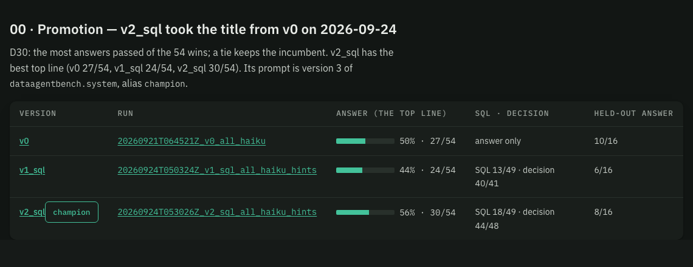
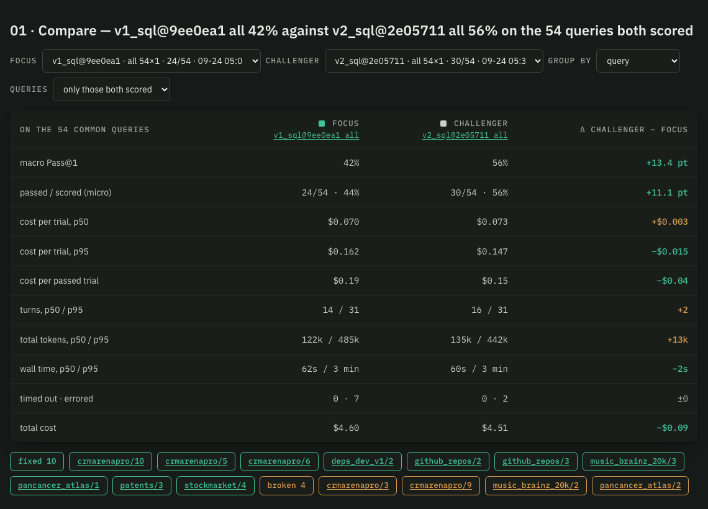
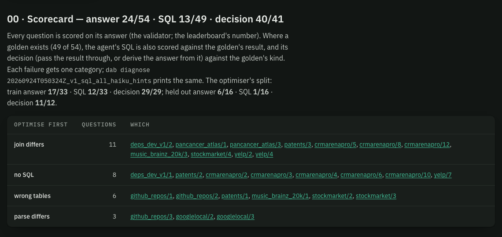
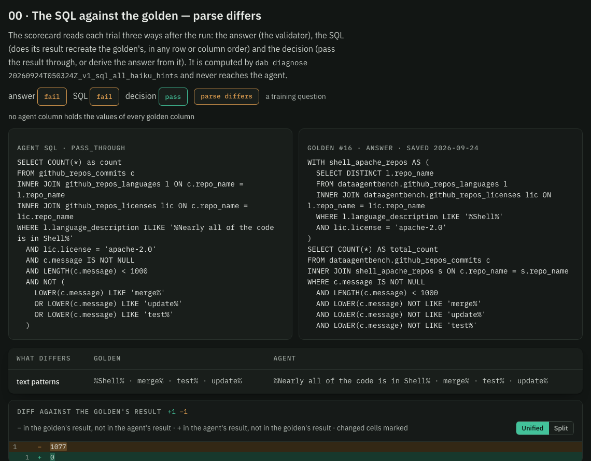
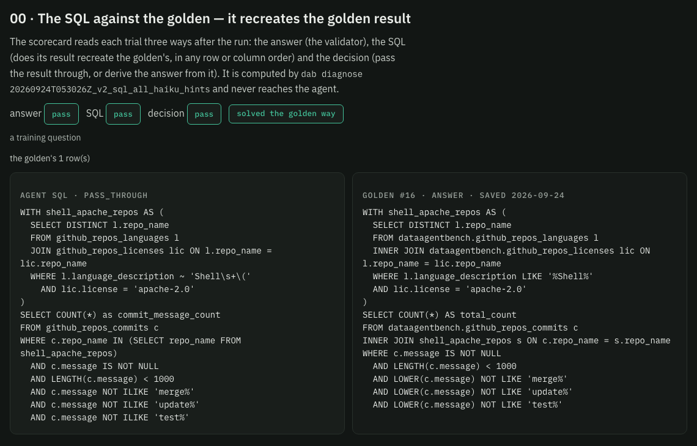
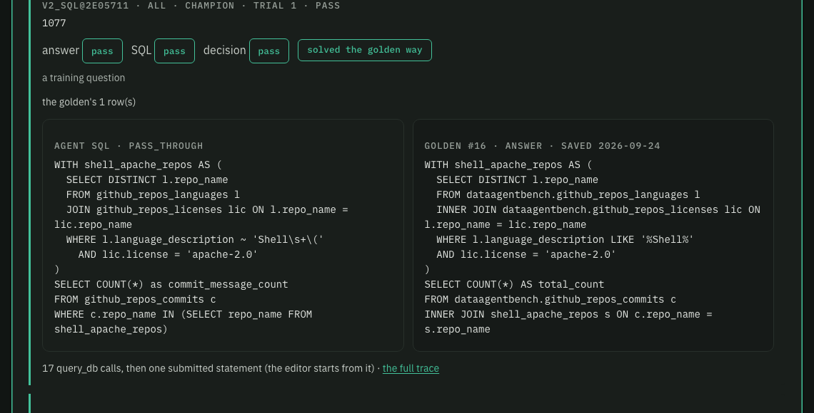
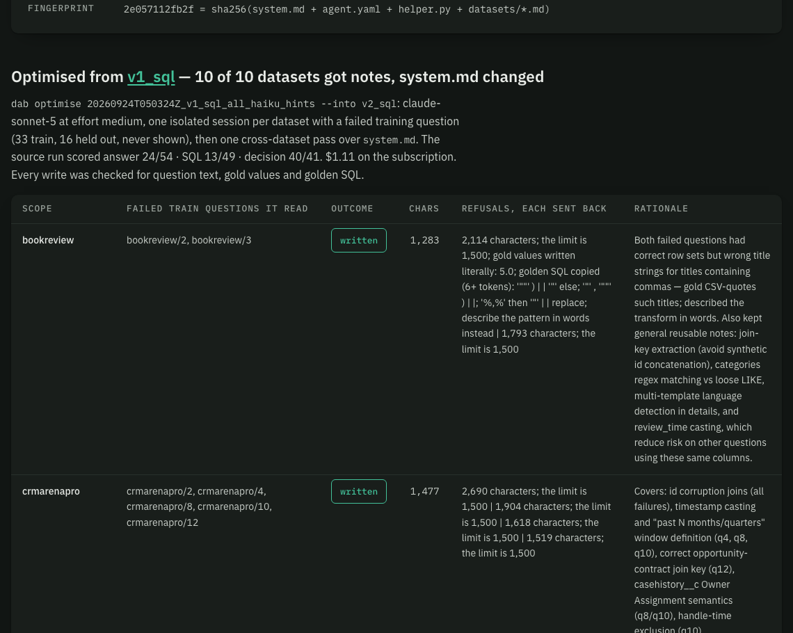
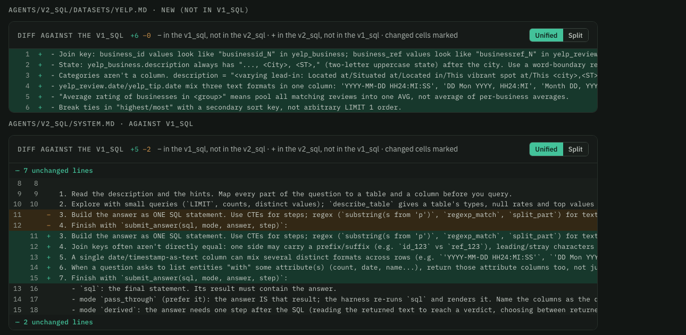

DataAgentBench · build receipt + walkthrough · 2026-09-24 · plan s06 (B1–B11, D26–D31) · branch challenger_20260923 · every figure is a screenshot of the explorer on :8091
The build ran end to end as decided: register v1_sql, run and score it on all 54 three ways (answer, SQL, decision), one guarded optimiser round writing per-dataset notes and a system.md edit, run v2_sql on the same 54, promote by the top line (D30). Model spend: v1_sql $4.60 + optimiser $1.24 + v2_sql $4.51 ≈ $10.35, about a quarter of one Haiku-heavy 5-hour window, half the ≈ $21 estimate (the SQL agent costs half what v0 did per run).
01 · verdict · dab promote · agents/promotions.jsonl
Runs tab · 00 Promotion

dab promote recorded: every candidate's newest complete full-split run, its scorecard and its held-out answers. v2_sql's prompt is version 3 of dataagentbench.system and carries the champion alias; agents/champion now reads v2_sql. /runs| Dataset | Questions | v0 | v1_sql | v2_sql | v2 − v0 |
|---|---|---|---|---|---|
| agnews | 4 | 0/4 | 1/4 | 1/4 | +1 |
| bookreview | 3 | 3/3 | 3/3 | 3/3 | +0 |
| crmarenapro | 13 | 9/13 | 6/13 | 7/13 | -2 |
| deps_dev_v1 | 2 | 0/2 | 0/2 | 1/2 | +1 |
| github_repos | 4 | 2/4 | 1/4 | 3/4 | +1 |
| googlelocal | 4 | 1/4 | 2/4 | 2/4 | +1 |
| music_brainz_20k | 3 | 1/3 | 1/3 | 1/3 | +0 |
| pancancer_atlas | 3 | 2/3 | 1/3 | 1/3 | -1 |
| patents | 3 | 0/3 | 0/3 | 1/3 | +1 |
| stockindex | 3 | 2/3 | 3/3 | 3/3 | +1 |
| stockmarket | 5 | 3/5 | 2/5 | 3/5 | +0 |
| yelp | 7 | 4/7 | 4/7 | 4/7 | +0 |
| all | 54 | 27/54 | 24/54 | 30/54 | +3 |
02 · what moved · Runs tab compare, focus v1_sql, challenger v2_sql, by query
Fixed by v2_sql over v1_sql: deps_dev_v1/2, github_repos/2, github_repos/3, pancancer_atlas/1, patents/3, crmarenapro/5, 6, 10, music_brainz_20k/3, stockmarket/4. Broken: pancancer_atlas/2, crmarenapro/3, crmarenapro/9, music_brainz_20k/2. With one trial per question these are single draws: an exact McNemar test gives p = 0.18 for v2 against v1 (10 vs 4) and p = 0.61 for v2 against v0 (9 vs 6). D30 promotes on the top line, as decided; the lead is real in this run and unproven beyond it.
Runs tab · 01 Compare on the 54 both scored

03 · the scorecard · dab diagnose · runs/<id>/scorecard.json
Answer: the validator, over 54. SQL: does the agent's re-run result recreate the golden's result (any row or column order, numbers at the coarser rounding of the two), over the 49 with a golden. Decision: pass-through where the golden is an answer, derived where it is evidence. Each failure then gets one category from the result diff and a sqlglot structure diff.
Run page · v1_sql · 00 Scorecard

| Category | v1_sql | v2_sql | Reading |
|---|---|---|---|
| solved the golden way | 13 | 17 | answer, SQL and decision all pass |
| right answer another way | 8 | 12 | answer passes, result differs from the golden's (extra rows or columns, "2020s" for 2020); outside the loop |
| no SQL | 8 | 1 | ran out of turns or never called submit_answer; the notes cut exploration |
| join differs | 11 | 10 | the first structural difference; often only the first of several (see open items) |
| wrong tables | 6 | 4 | read a different table set from the golden |
| parse differs | 3 | 2 | text pattern differs (the templated-prose fields) |
| filter · order / tie · format | 0 | 3 | one each in v2_sql |
| no golden | 5 | 5 | agnews/1–4, crmarenapro/7: answer-scored only |
04 · one trial, before and after · github_repos/3 (a training question)
The trial page now opens with the SQL against the golden: the three verdicts, the category, the agent's submitted statement beside golden #16, what differs in the statements, and the diff of the two results.
v1_sql · github_repos/3 t1 · parse differs

v2_sql · github_repos/3 t1 · solved

Golden tab · editor seeded from the run

05 · what the optimiser wrote · Agent tab, v2_sql · agents/v2_sql/optimise.json
Sonnet 5 at medium effort, one isolated session per dataset with a failed training question (10 sessions, 5–11 turns; $1.24 in all, counting the first system pass, which a guard false positive refused). 26 writes were refused and sent back: 17 for length only, 9 for a leak (a gold value written literally, or 6+ tokens of golden SQL), each fixed on the next write; no session was refused twice for a leak, so none was dropped. The cross-dataset pass added: tie-breaks, join keys that need normalising, text dates in mixed formats, and returning the attribute columns a question names.
Agent tab · Optimised from v1_sql

Agent tab · v2_sql against v1_sql

06 · held out · 33 train / 16 held-out, seeded, stratified (data/splits/)
| Answers passed | v0 | v1_sql | v2_sql |
|---|---|---|---|
| train (33, with a golden) | 17/33 | 17/33 | 21/33 |
| held out (16, with a golden) | 10/16 | 6/16 | 8/16 |
| no golden (5) | 0/5 | 1/5 | 1/5 |
Train rose 4 and held-out rose 2, so the notes partly generalise, but the held-out 16 are where v0 is still ahead. Per D30 this does not gate the promotion; it is the check to watch in the next round.
07 · receipt · every build item, 11 of 11 ticked
| Item | Status | What exists |
|---|---|---|
| B1 register v1_sql | built | agents/v1_sql/ (3 tools, hints on, pack off, max_turns 30, the s06 system.md); tracking/prompts.py registers each fingerprint as a version of dataagentbench.system (v1 = v1_sql, v3 = v2_sql, alias champion); the name added to nmp-central-ai's registry P6 |
| B2 prompt pack switch | built | pack and per-dataset notes in compose_system_prompt; description and hints verbatim; AgentVersion.prompt_for; the Agent tab shows the composed prompt with the version's own hints / pack / notes |
| B3 submit_answer | built | re-runs the SQL as dab_agent, pass_through renders it, derived keeps the answer and step; a SQL error or empty result is sent back; query_db without save_as; the MCP server registers only the version's tools; no sandbox without Python |
| B4 recording | built | agent_sql · agent_result · mode · step · result_rows in results.jsonl, the submission on the trace, on the MLflow trace outputs, and a submissions.json table plus scorecard metrics on the MLflow run |
| B5 tests + isolation | built | tests/test_v1_sql.py, tests/test_scorecard.py (prompt verbatim, submit contract, pass-through = render, tool registration, scorecard, split, guards, promotion); live dab isolation-check --agent v1_sql: three tools, no plugins, "isolated" |
| B6 scorecard | built | eval/scorecard.py, dab diagnose (auto after every run; --refresh re-logs to MLflow); Runs tab and run page show the three totals with denominators and "optimise first" |
| B7 explorer | built | trial page §00 and the Golden editor: agent SQL beside golden SQL, three verdicts, category, structure diff, result diff |
| B8 dry run → 54 × 1 | ran | dry run 20260924T050147Z… (no model); live 20260924T050324Z_v1_sql_all_haiku_hints: 24/54, $4.60, 20 min |
| B9 optimiser + v2_sql | ran | agents/optimiser/, agent/optimise.py, eval/guards.py, dab optimise; agents/v2_sql/; live 20260924T053026Z_v2_sql_all_haiku_hints: 30/54, $4.51; CLAUDE.md's model and golden rules updated, AGENTS.md §7 rewritten |
| B10 promote | ran | eval/promote.py, dab promote; v2_sql crowned; the Runs tab shows the verdict and v0 as superseded |
| B11 this walkthrough | built | added for it: the Agent tab's lineage (round record + file diffs), the promotion panel, the graph drawing only the backends a version's tools reach |
08 · deviations and open items
--system-pass-only, $0.04)..lavish/s03_challenger-loop.html; the nmp-central-ai registry edit (one line, P6 prompts) is uncommitted in that repo.eval/guards.py; wiring it into golden-propose is small), P4 (draft upstream issues), crmarenapro/7's evidence golden.